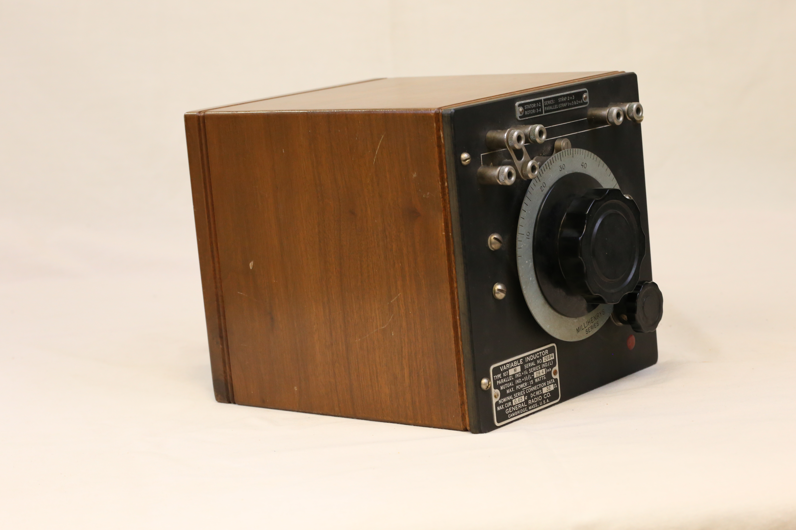
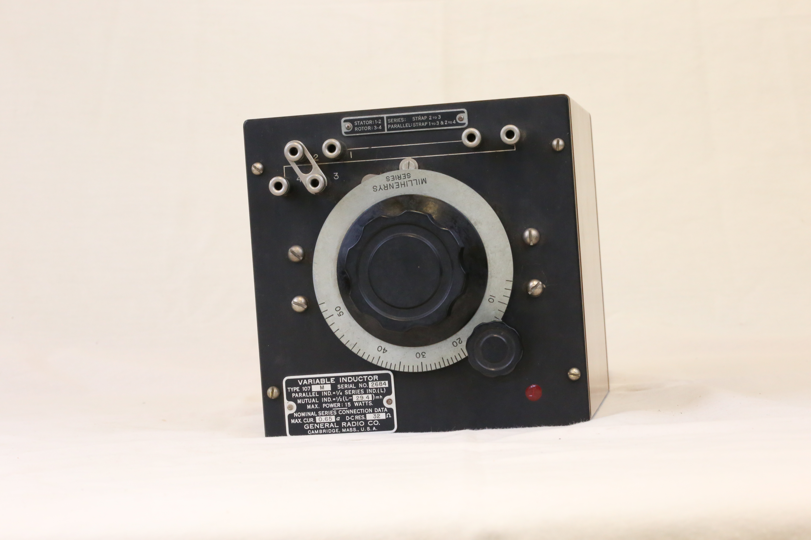
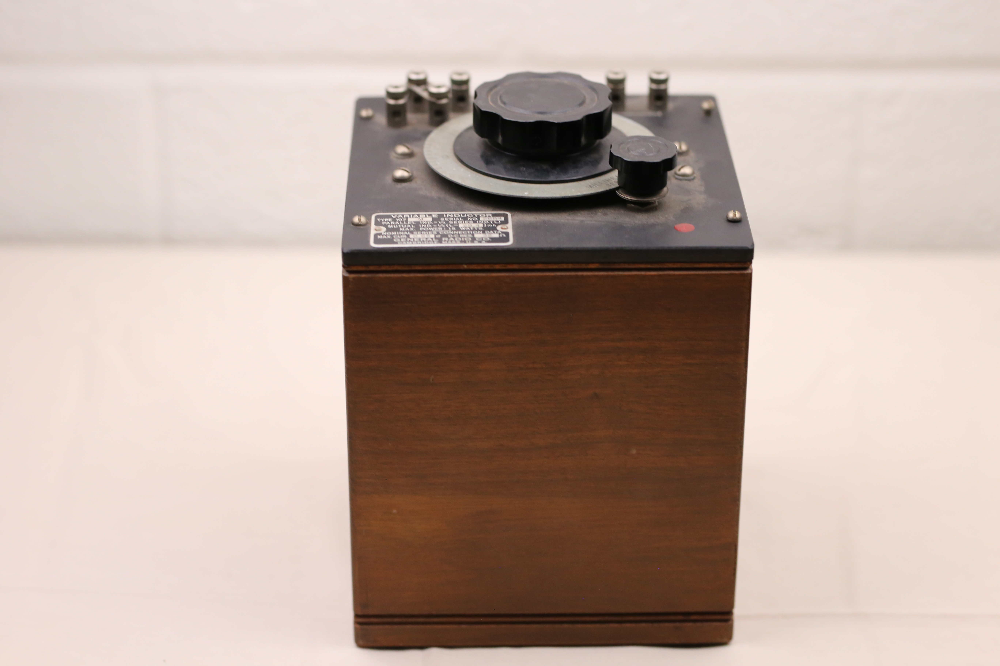
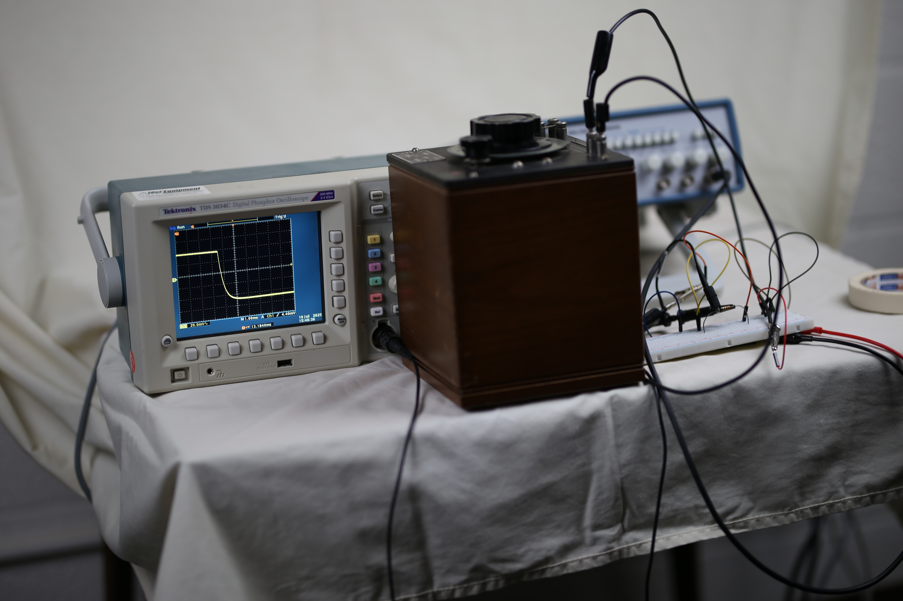

A brown wooden square box with a black slate covering on top. The top panel has two plastic tuning controls( one big and one small), and is held in place by screws. It has two ports for connection and four terminal connecters with metal straps. Technical and manufacturer's information are visible on the top panel.
(outside look)



The general construction of this variable inductor (type 107M series), consists of two coils , a rotor and a stator, mounted concentrically (with the same center).Typically, this inductor is housed in a wooden case with a slate or metal top panel. Operationally, the inductor can be adjusted smoothly over a given range. The connecting terminals provided for both the rotor and the stator allows for coil connections in series or parallel. By rotating the rotor, the coupling between the coils changes, therefore varying the inductance: the movement of the core changes the permeability of the magnetic flux path hence the change in inductance.
Markings: On the top panel, information on measurements, manufacturer and model specifications and technical details are provided
Measurement: Millihenry series
Manufacturer information: Variable inductor, Type 107M, Serial No. 2684, Parallel Ind= ¼ Series IND(L), Mutual IND= ½ ( L-29.4)mh, Max Power: 15 watts, Nominal Series Connection Data, Max Cur. 0.65 amps: D-C Res. 32 ohlms, General Radio Co. Cambridge. Mass, USA.
Technical Information: Stator: 1-2, Rotor: 3-4, Series: Strap 2 to 3, Parallel: Strap 1 to 3 or 2 to 4.
Functionality
Twisting the rotor clockwise or anticlockwise changes the coupling between the coils, thus increasing or decreasing inductance. The total inductance vary on a ratio of 25:1. By connecting the separate terminals of the rotor and the stator in parallel or series, it allows this equipment to be used as a self-inductor or a mutual inductor.
(video: turning the knob changes the inductance value and the graph)
Inductors Physics
An inductor is a passive electrical component , often made into a coil, and stores energy in a magnetic field when electric current flows through it. Its strength is measured in inductance with an SI unit of henries (H). In case of a current change, the inductor induces a voltage emf ( electromotive force: voltage generated due to change in magnetic flux), which in turn opposes the change in current. An inductance strength is increased through increasing the number of coils, shortening the coil length, increasing the coil surface area and wrapping the coil around a greater magnetic permeable material.
(more pictures)

Manufacturer's Information
General Radio Companywas founded on June 14, 1915 by Melville Eastham in Cambridge Massachusetts. The company's aim was to manufacture instruments and parts for precision measuring, especially those involved with receiving and transmitting signals. Among the early products manufactured by the company were: variable capacitors, spark gaps, crystal detectors, radio components and variable inductors. The company expanded and enriched its relevance during the first world war, as it manufactured needed equipment such as the portable wave meters, thus securing major contracts from telecommunication companies such as AT&T and the National Bureau of Standards. Notably, it built a synchronous rectifier to support AT&T in transatlantic communications during the first world war. Later on, the company grew and expanded due to the booming radio era, as its precision tools for signal transmission became more relevant.
Reflection From The Present
The Variable Inductor 107M Series is a product of America's radio boom era of the mid 20th-century. They were last made in the late 1940s, making the available copies several decades old. Their rarity and signifcance to the modern technological and electrical advancement make them attractive, especially for vintage radio enthusiasts, collectors of antique test equipment and historians of elcectronics. Compared to the modern equipment (favoring plastics and software-defined tuning), these inductors feature ancient construction design choices, characterized by the wooden cases, slate metal panels and manual tuning controls. Though the current ones are more precise, compact and design-specific , this traditional variable inductor still maintains its elegance, engineering simplicity and durablity, making it an electrical vintage.